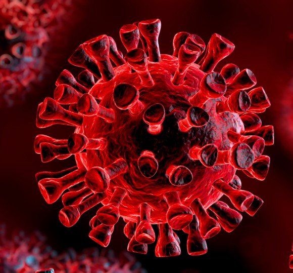

COVID-19
is a new illness that can affect your lungs and airways. It's caused by a virus called Coronavirus.
It's called Coronavirus because under a Microscope,it looks like a Crown.
It's also known as:SARS-CoV-2, nCov, 2019 Novel Coronavirus

Image Of Covid-19
The Early Symptoms include:
The virus can lead to pneumonia, respiratory failure, septic shock, and death. If you notice these severe symptoms in yourself or a loved one, get medical attention right away:
If you are exposed and infected, symptoms can show up in as few as 2 days or as many as 14. It varies from person to person.
When you have symptoms, they can be similar to a bad cold or the flu. Your doctor will suspect COVID-19 if:
Details about cold,flu orCovid-19
Doctors aren't sure. Coronaviruses can affect different species of animals, in addition to people.
MERS
and
SARS
were both linked to animals. Studies show
COVID-10
has ties to snakes, bats, and pangolins. Many people who got the disease early on were linked to a large live seafood and animal market in
China-you might hear it called a
Wet Market.
The first cases may have come from animals sold in the market, then spread from person to person.
SARS-CoV-2
, the virus, mainly spreads from
person to person.
Most of the time, it spreads when a sick person coughs or sneezes. They can spray droplets as far as 6 feet away. If you breathe them in or swallow them, the virus can get into your body. Some people who have the virus don't have symptoms, but they can still spread the virus.
You can also get the virus from touching a surface or object the virus is on, then touching your mouth, nose, or possibly your eyes.
A study shows that the COVID-19 coronavirus can last for several hours on various types of surfaces:
That's why it's important to disinfect surfaces to get rid of the virus.
Doctors and health officials use this term when they don't know the source of the infection. With COVID-19, it usually refers to someone who gets the virus even though they have not been out of the country or haven't been exposed to someone who's traveled abroad or who has COVID-19.
In February 2020, the CDC confirmed a COVID-19 infection in California in a person who had not traveled to an affected area or been exposed to someone with the disease. This marked the first instance of community spread in the U.S. It's likely that person was exposed to someone who was infected but didn't know it.
The number of people infected by SARS-CoV-2changes every day. Check here for Daily Coronavirus Update in all Countries
If you're in an area where it's spreading, take these steps:
1.Wash your hands often with soap and water, or clean them with an alcohol-based sanitizer. This kills viruses on your hands.
2.Practice social distancing. Because you can have and spread the virus without knowing it, you should stay home as much as possible. If you do have to go out, stay at least 6 feet away from others.
3.Don't touch your face. Coronaviruses can live on surfaces you touch for several hours. If they get on your hands and you touch your eyes, nose, or mouth, they can get into your body.
4.Clean and disinfect. You can clean first with soap and water, but disinfect surfaces you touch often, like tables, doorknobs, light switches, toilets, faucets, and sinks. Use a mix of household bleach and water (1/3 cup bleach per gallon of water, or 4 teaspoons bleach per quart of water) or a household cleaner that is approved to treat SARS-CoV-2. Wear gloves when you clean, and throw them away when you are done.
There is no need to wear a face mask unless your doctor tells you to. You will need one if you have been exposed to SARS-CoV-2. or have COVID-19. , or if you are a health care worker or caring for someone who has it.
Some herbal therapies and teas have been said to prevent infection, but there’s no proof any of these work.
In addition to practicing the prevention tips listed above, you can:
Not yet, but clinical trials are under way in the U.S. and in China to test vaccines for SARS-CoV-2/COVID-19.
One vaccine called mRNA-1273 (which was developed by using messenger RNA) would tell your cells to pump out a protein that will kick-start your immune system to fight the virus. It is worked well in animals and is ready to test in humans.
Call your doctor or local health department if you think you’ve been exposed and have symptoms like:
The test looks for evidence of the virus in your upper respiratory tract. The person giving the test puts a swab up your nose to get a sample from the back of your nose and throat. That sample goes to a lab that looks for viral material. If it’s there, the test is positive. A negative test could mean there is no virus or there wasn’t enough to measure. That can happen early in an infection. It usually takes 24 hours to get results, but the tests must be collected, stored, shipped to a lab, and processed. Click here for More Update.
There is no home test kit for COVID-19. The FDA is cracking down on these bogus products.
There’s no specific treatment for COVID-19. People who get a mild case need care to ease their symptoms, like rest, fluids, and fever control. You can take over-the-counter medicine for a sore throat, body aches, and fever. But don't give Aspirin to children or teens younger than 19.
You might have heard that you should not take Ibuprofen to treat COVID-19 symptoms-The WHO made that statement in March 2020. But they reversed it soon after and said there is no proof that taking it causes any harm.
Antibiotics would not help because they treat bacteria, not viruses. If you hear about people with COVID-19 getting antibiotics, it is for an infection that came along with the disease.
Those with severe symptoms need to be cared for in the hospital.
Numerous clinical trials
are under way to explore treatments used for other conditions that could fight
COVID-19
and to develop new ones.
Several studies are focused on an antiviral medication called
Ebola.
Every case is different. You may have mild, flu-like symptoms for a few days after exposure, then get better. But some cases can be severe or Death.
Doctors are not sure yet if you can get reinfected after you have had it. With other coronaviruses that only cause colds, you have a period that you are immune, but that goes away over time.
Anyone can get it, and most infections are usually mild, especially in children and young adults. But if you are not in an area where COVID-19 is spreading, have not traveled from an area where it is spreading, and have not been in contact with someone who has it, your risk of infection is low.
Older people and those with weakened immune systems or medical conditions like chronic bronchitis, emphysema, high blood pressure, heart disease, lung disease, cancer, or diabetes are most likely to get a serious illness.
If you live in or have traveled to an area where COVID-19 is spreading:
Coronaviruses were first identified in the 1960s, but we don't know where they come from.
Almost everyone gets a coronavirus infection at least once in their life, most likely as a young child. In the United States, regular coronaviruses are more common in the fall and winter, but anyone can come down with a coronavirus infection at any time.
The symptoms of most coronaviruses are similar to any other upper respiratory infection, including a runny nose, coughing, sore throat, and sometimes a fever. In most cases, you won't know whether you have a coronavirus or a different cold-causing virus, such as a rhinovirus. You treat this kind of coronavirus infection the same way you treat a cold.